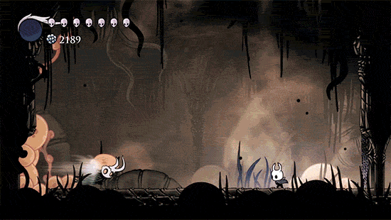
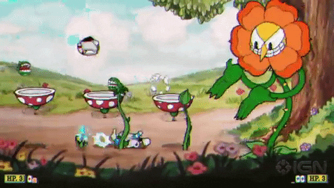
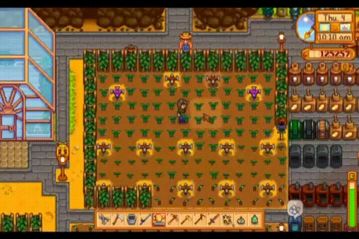

Hollow Knight
El videojuego cuenta la historia del Caballero, en su búsqueda para descubrir los secretos del largamente
abandonado reino de Hallownest, cuyas profundidades atraen a los aventureros y valientes con la promesa de
tesoros o la respuesta a misterios antiguos.
Una secuela del videojuego titulada Hollow Knight: Silksong, se encuentra actualmente en desarrollo y su
lanzamiento está programado para Microsoft Windows, Mac, Linux y Nintendo Switch, aunque Team Cherry no ha
descartado lanzamientos en otras plataformas.


Cuphead
Cuphead y Mugman eran dos hermanos que vivían con su familiar, Elder Kettle. Un día, entraron al casino del
Diablo. Tenían una racha perfecta, y el Diablo les dijo que si ganan una última ronda se convertirán en
dueños del casino pero de lo contrario se adueñaría de sus almas. Cuphead, cegado por la ambición, aceptó y
perdió. Los hermanos le suplicaron al Diablo no castigarlos y éste les propuso que si derrotaban a sus
deudores y recolectaban sus contratos los perdonaría.


Stardew Valley
¡Stardew Valley es un RPG de vida en el campo! Hereda la vieja granja de tu abuelo en Stardew Valley. Armado
con herramientas de segunda mano y algo de dinero, te dispones a empezar tu nueva vida. ¿Podrás aprender a
vivir de la tierra y a convertir esos campos de malezas en un hogar próspero? No va a ser fácil. Desde que
Joja Corporation llegó a la ciudad, las antiguas formas de vivir han desaparecido. El centro comunitario, en
su momento el centro de actividad más activo de la ciudad, se encuentra ahora en ruinas. Pero el valle se
encuentra lleno de oportunidades. ¡Con un poco de dedicación, podrás ser uno de los que devuelva Stardew
Valley a la gloria!